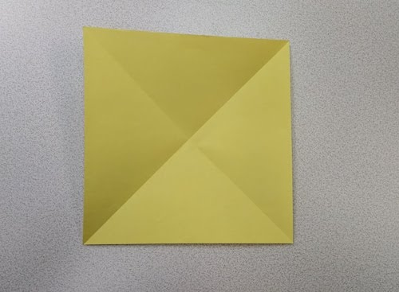
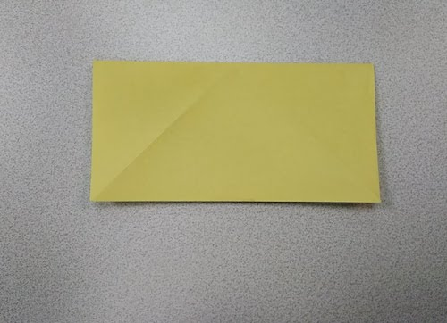
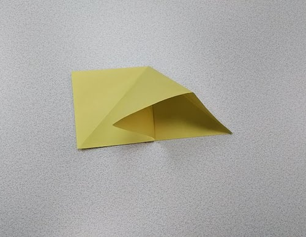
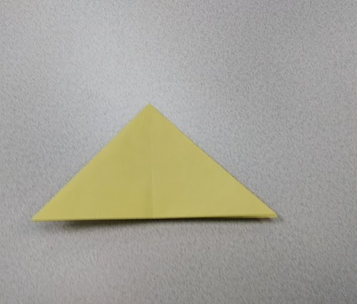
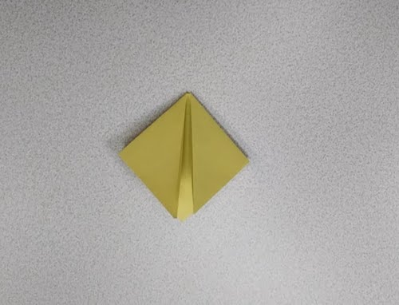
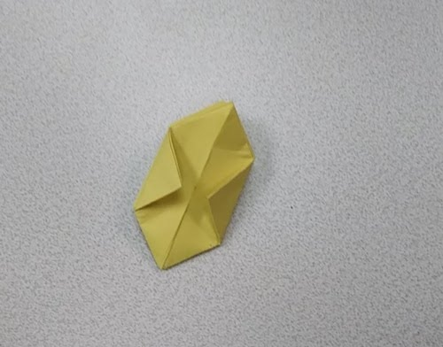
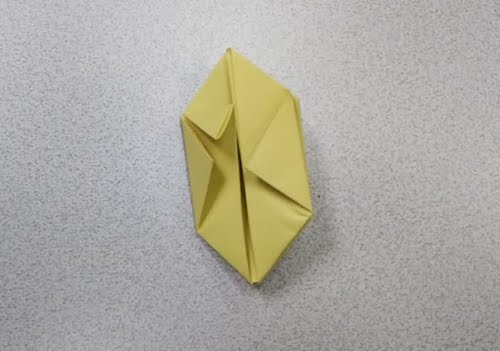
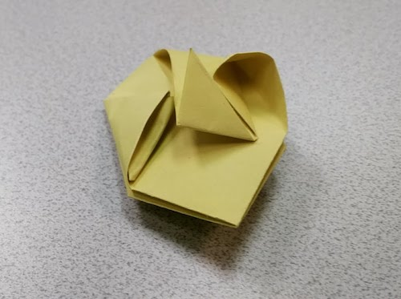

The End: Then you will find a hole at the top. Blow into it. There is your Origami Ballon.

Step 1: Fold the top two corners to the opposite bottom corners, then unfold to create an X
Step 2: Fold the paper in half
Step 3: Get the top right corner and push down so it flatens, then becomes a triangle, fold the left corner of the triangle to the right side. Repeat the step for the left side
Step 4: Take the bottom right corner and fold up to the top corner. Only take one layer of paper. Do this for the left side then on the back.
Step 5: When the Origami ballon looks like this you need to take one layer of the side corners, then fold to the middle line. Do this on both sides, then the back.
Step 6: After you have done step 5 your origami ballon should look like this. You then need to fold the top flap down to the middle. It should line up right next to the corners you folded in step 5.
Step 7: Fold all corners down like you did in step 6.
Step 8:The corners you folded in step 5 should have a pocket. Open up that pocket, if you have trouble you can use a pen. Then take the top right corner of the small fold you did in steps 6-7 and fold into the pocket.
The End: Then you will find a hole at the top. Blow into it. There is your Origami Ballon.